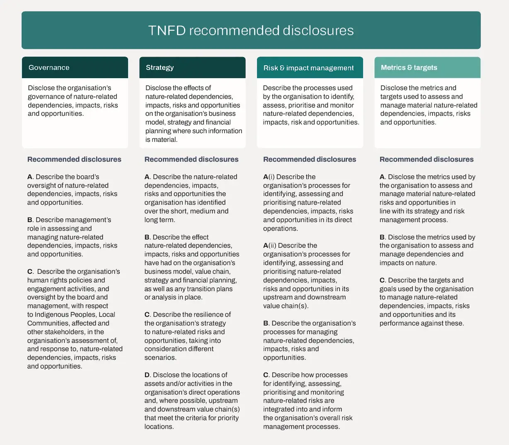
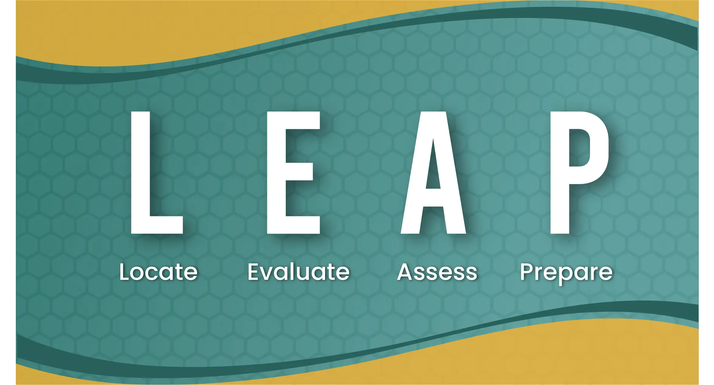
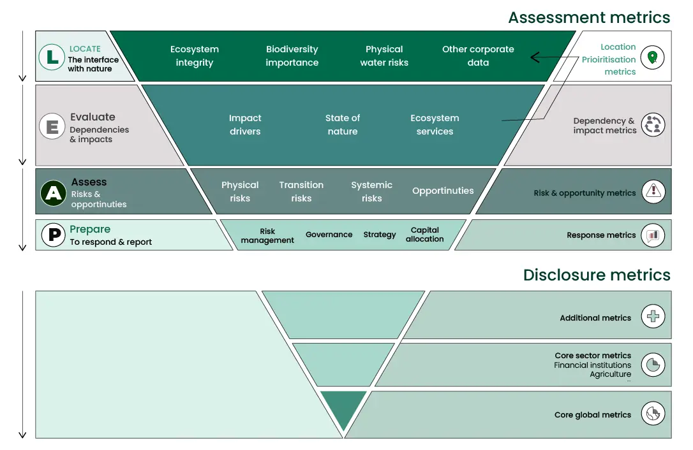

"Our economies, livelihoods, and well-being all depend on our most precious asset: Nature. Collectively, we have failed to manage our global portfolio of assets sustainably."
Despite being the direct and indirect source of all the capital value generated in the global economies, "Nature" was long missing from the balance sheets and risk reports of corporations. A significant proportion of companies, investors, and lenders currently lack a comprehensive understanding of how nature-related factors affect their operations. They often fail to adequately consider nature-related dependencies, impacts, risks, and opportunities when making strategic decisions or allocating capital. According to data from CDP, approximately 70% of companies that reported data to CDP in 2022 did not conduct assessments to gauge how their value chains were impacting biodiversity.
Formally launched in June 2021, the Taskforce on Nature-related Financial Disclosure (TNFD) is a market-led, science-based, and government-backed initiative providing organizations with the tools to address evolving nature-related issues. TNFD is supported by major global organizations and is endorsed by G7 and G20 countries. In September 2023, TNFD released a comprehensive set of recommendations to help companies factor in nature-related risks, opportunities, and impacts in their business strategy and capital allocation decisions.
The TNFD recommendations offer a risk management and disclosure framework that can be applied by companies and financial institutions, regardless of their size. This framework helps them identify, evaluate, control, and, when relevant, communicate nature-related concerns. The disclosure recommendations are organized into four pillars, which align with both the Task Force on Climate-related Financial Disclosures (TCFD) and the International Sustainability Standards Board (ISSB). These pillars are designed to accommodate the various existing materiality approaches and are in harmony with the objectives and milestones outlined in the Kunming-Montreal Global Biodiversity Framework. It encompasses 14 recommended disclosures that encompass aspects related to nature-related dependencies, effects, risks, and opportunities (as depicted in the figure).
{kind=link}

After conducting a pilot program and gathering input from the market and open consultation, the TNFD has crafted a diverse array of guidance resources. These resources are designed to assist organizations in navigating the steps of recognizing, appraising, evaluating, and handling nature-related matters. The most noteworthy pieces of guidance, which include the integrated LEAP approach and disclosure metrics.
{kind=link}

LEAP serves as an internal assessment process for due diligence. Its utilization is voluntary for complying with the TNFD's disclosure recommendations. If organizations already possess a similar due diligence process for nature-related matters, they can employ it to shape their TNFD-aligned disclosure statements. LEAP can then be used as a checklist to ensure that your existing process sufficiently covers nature-related concerns in accordance with the TNFD's recommended disclosures.
LEAP involves four phases:
- Locate your interface with nature
- Evaluate your dependencies and impacts on nature
- Assess your nature-related risks and opportunities
- Prepare to respond to, and report on, material nature-related issues, aligned with the TNFD's recommended disclosures
Disclosure Metrics
As there are many metrics associated with nature-related impacts, and market practitioners prefer a smaller set of indicators, TNFD has adopted the leading indicator approach. It involves different categories of metrics:
- A small set of core metrics that apply to all sectors and 'core sector metrics' for each sector.
-
A larger set of additional metrics, which are recommended for disclosure, where relevant, to best represent an organization's material nature-related issues.

{kind=link}
TNFD is gaining traction around the globe amongst key stakeholders. Earlier this month, CDP announced the intention to align with TNFD framework and drive implementations across global economy. Collective engagement by asset owners and asset managers to drive nature related actions has begun through the Nature Action 100 investor coalition, the same effective approach demonstrated by the Climate Action 100. Several enterprises, such as Natura&Co, Holcim, and Reckitt, have already been testing TNFD implementation privately through a series of beta versions. GSK (a global biopharma company) has already declared its plan to issue its first TNFD-compliant report in 2026, based on data from 2025.
TNFD is likely to follow a trajectory of TCFD, which started as a voluntary, market-led framework with regulatory adoption expected around the world. Moving forward we foresee pressure building on companies to report on nature related impacts.